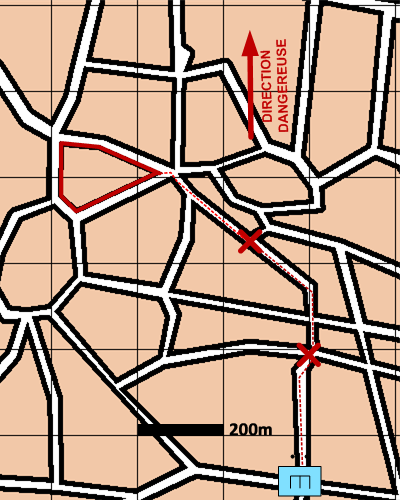

NIVEAU :Pion
ARME :GENIE
MISSION :Reconnaitre
Objectif principal
- Reconnaitre
Modalités d'exécution
-
Parcourir les objectifs pour y déceler d'éventuels obstacles
-
Contournement ou franchissement de l'obstacle
Schéma de modélisation

Paramètres obligatoires
Zone de regroupement : Zone de regroupement
Objectif (parmi les objectifs suivants)
Bloc urbain :
Bloc Urbain à rejoindre et reconnaître.
Itinéraire :
Itinéraire à rejoindre et reconnaître.
Zone :
Zone à rejoindre et reconnaître.
Paramètres optionnels
Limite gauche / limite droite
Direction Dangereuse